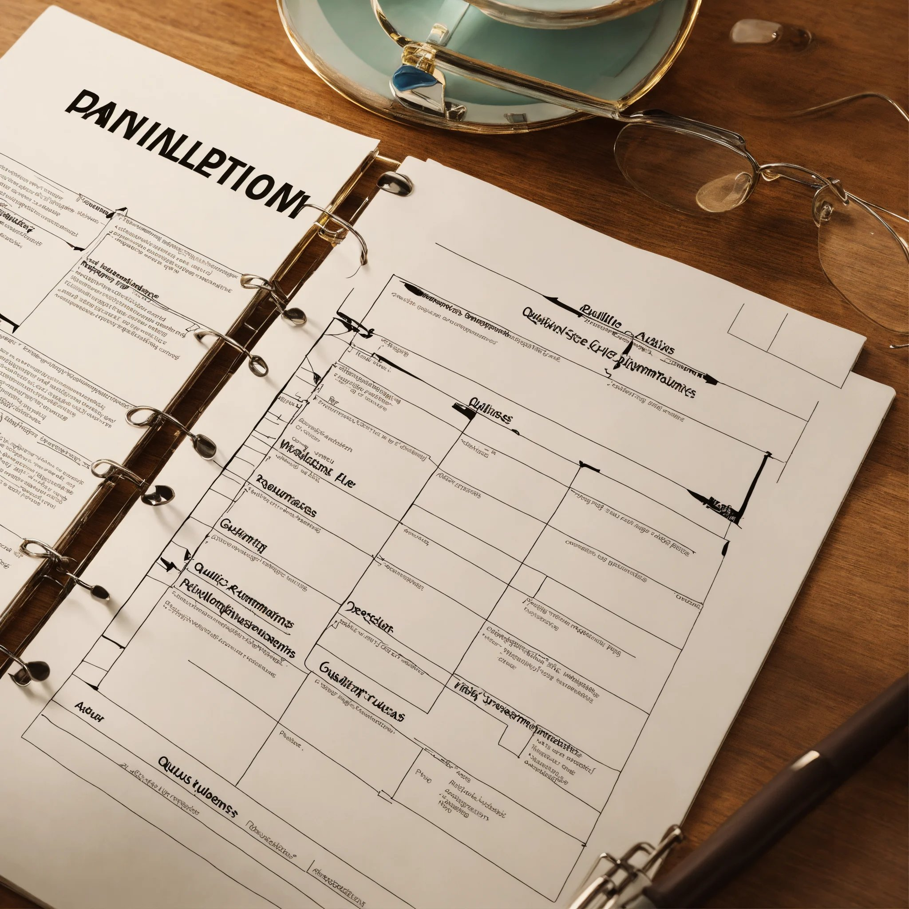

reflectie
Klik op het download icoontje om een copy van mijn reflectieverslag te downloaden
feedback
Klik op het download icoontje om een copy van mijn feedback van periode 2 te downloaden.

plan van aanpak
Klik op het download icoontje om een copy van het PvA te downloaden. Dit bestand is van periode 1 en is goed gekeurd door Raymond.
presenteren
vergaderen
Klik op het download icoontje om een zip bestand te downloaden. In dit bestand zit een ingevuld pfd bestand beoordeeld door Daan en de notulen van periode 1 week 8.
edumundo
Klik op het download icoontje om een copy van mijn edumundo portfolio te downloaden.